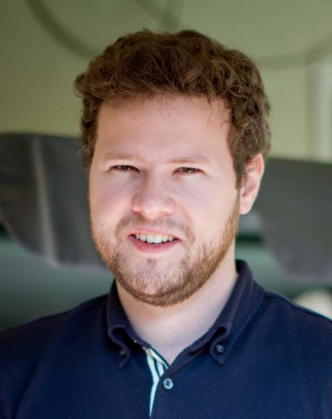

About
"If I'm going to go on a hike in the forest, or travel to some remote place, I may as well bring along a camera".
I guess that's how it starts for everyone, with the camera being yet another travel accessory you struggle to find room for in your bag.
Eventually this perspective got flipped on its head: I sometimes found myself going on trips with photography as the main purpose. I found myself thinking "I need to scout out some places to get some good shots with my camera".
And so it began!
Photography is a bit different than other professions. As far as I know, carpenters don't scout out new locations so they can have the satisfaction of just hitting exotic nails with their new expensive hammers. Though it's true that they do sometimes venture to far-off places to repair damage from natural disasters. Their hammer then is a tool towards an end, that of rebuilding. Those professions have an opportunity to give back in a more practical way, in a way that's not always so obvious for photographers.
Photography can easily become useless if we let it. Photographers take photos of landscapes, take photos of people and culture, take photos of food. Always taking, taking, taking. What about giving? What about teaching some of the lessons experienced along the way? And even then, what if some experiences cannot be communicated except through experiencing?
In any case, where are the opportunities to give back, while still providing enough to live on myself? We have to be at least a little bit selfish here practically, right? I am on a lifelong journey to find out how to balance these things.
Just as with writing, I think photography can be a way of sharing. Of giving a perspective to an audience who might not otherwise have the same opportunity. It's also incredibly useful for preserving my own memories and perspectives. Sometimes it's only on the flight back home that I realize I may never have the opportunity to revisit a location. Or upon revisiting, you find that the location has changed dramatically. You cannot set foot twice in the same city.
I'm not sure where exactly my travels will take me, or what I'll learn along the way. I hope to share it here, and I hope you'll come along for the ride.
(P.S. - one way I've found how to give back: I'm a co-founder of Art4Relief, a popup gallery concept that gives a percentage of proceeds to good causes)